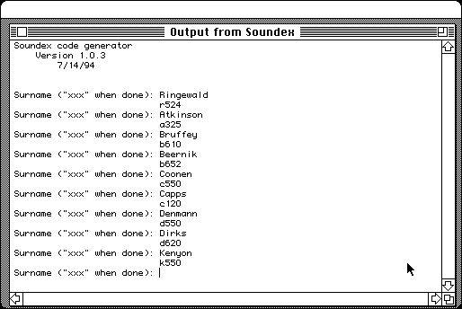

Download
soundex.zip (61K) Soundex 1.0.3 repackaged into a zipped hfs disk image and checksum file. The disk image can be mounted with Mini vMac.
soundex.hqx (82K) Soundex 1.0.3 in the original format.
copyright: Phil C. Stuart
mod date: Apr 6, 1996
license: freeware
official url :
Phil Stuart's Freeware Macintosh Applications
“A really simple FORTRAN based routine for generating soundex codes appropriate for looking up surnames in the US Census record etc.” Source code is included.

If you find these downloads useful, please consider helping the Gryphel Project, which hosts them.
Here are the md5 checksums for the downloads, signed with Gryphel Key 5:
--------- GRY SIGNED TEXT --------- 7e4df64d8264b03835f1c2e3a1c06676 soundex.zip 6cf676e3d4224e166fce5c352ce21665 soundex.hqx ------- BEGIN GRY SIGNATURE ------- Gry/4Xa8CFcUzxdN/MPspVRyLbwq9m8X2ISZnLKnbZaPuz75cWLM//qop1VNCeBD T42dxlMc0djDreiAu5BfR9I18+h9jHjlRkS1wYBVSMFqWdKNKcHtENUPLRT69C+a ix4+jl/36WZFyq61Olz1XSRJh9EFdSUYzS9anDGLf+Q3LyNHsD71AFAmcTsM7x7/ -------- END GRY SIGNATURE --------